Drag and drop
Move cards and categories with drag-and-drop, keyboard sorting or explicit controls, including into empty or collapsed groups.
Self-hosted homelab dashboard
The free, open-source start page for your homelab. Every service one click away, recognized with its own logo, in a design that feels like yours. One small container, no cloud, no telemetry.
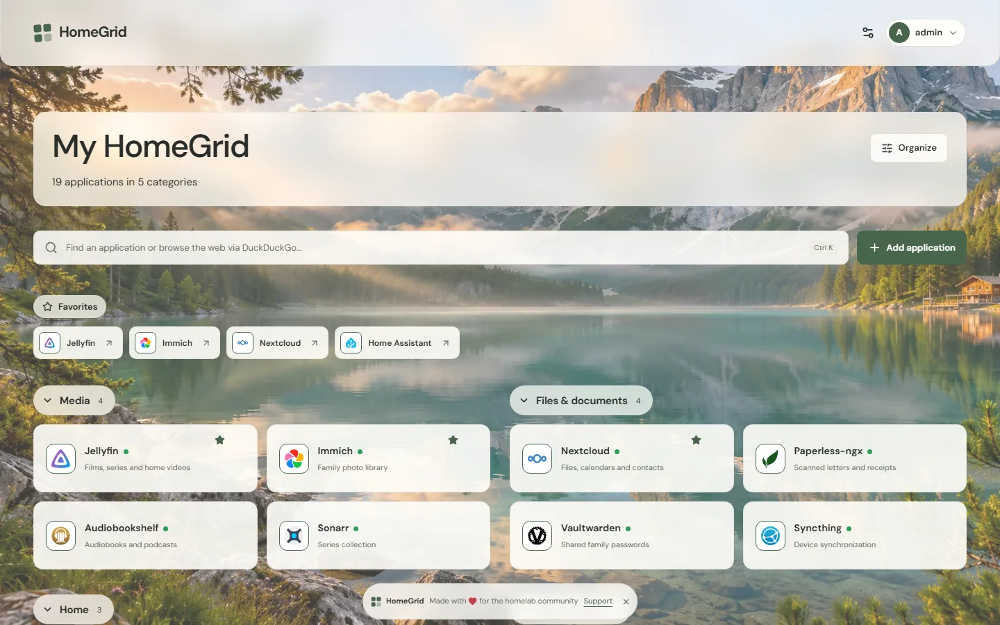
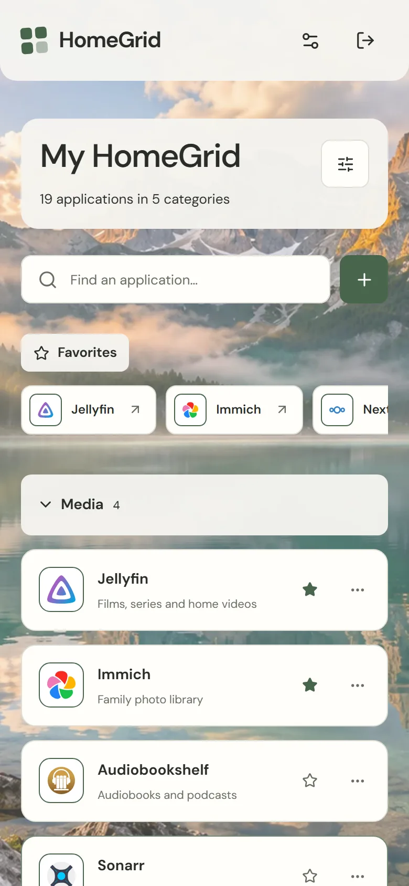
Add a service in seconds
HomeGrid recognizes well-known services from their name, hostname or default port and selects the matching logo for you. Keep it, or return to the previous icon with one click.
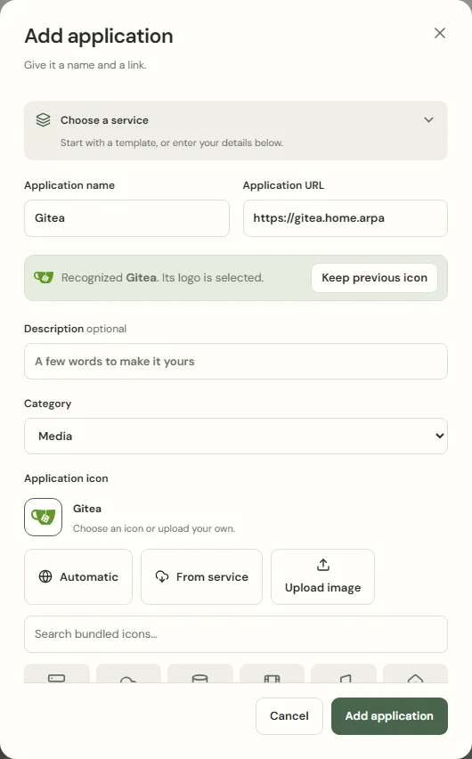
Find anything in a keystroke
Quick search finds services by name, description and category. If you like, the same search continues on the web, so HomeGrid can be your browser's start page.
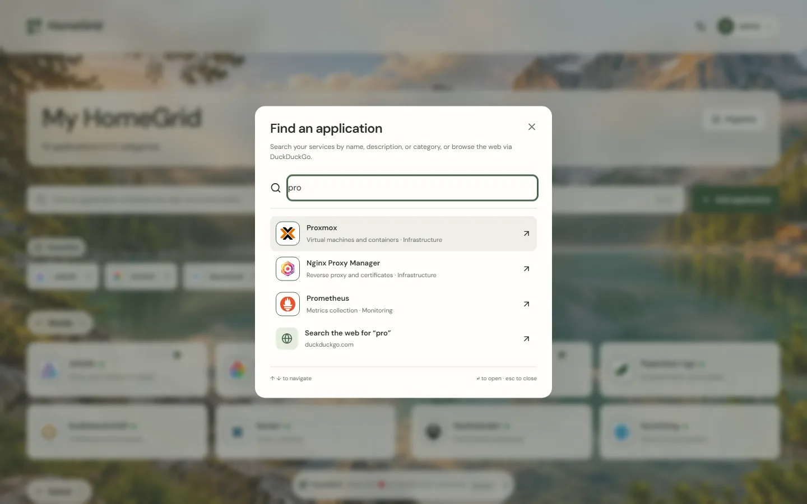
Move over in minutes
Import services.yaml and bookmarks.yaml from Homepage, config.yml from Homer or conf.yml from Dashy. HomeGrid takes over names, links, descriptions and groups and recognizes the logos.
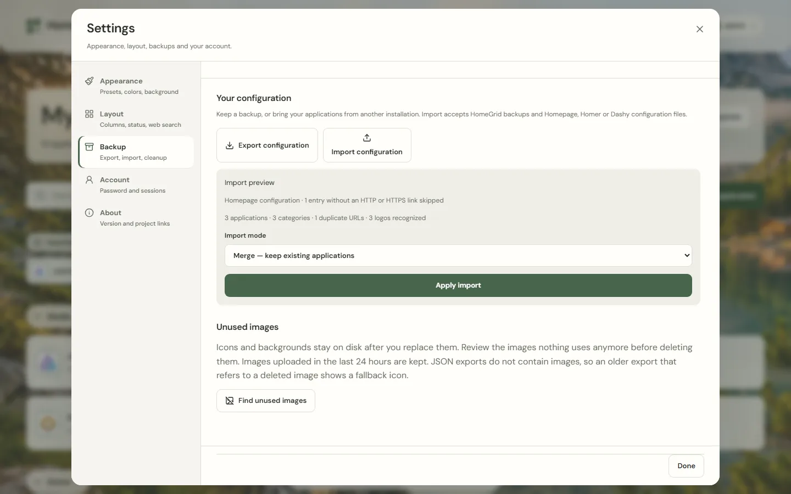
Designs and layouts
Photographs, gradients or a calm plain page, in light or dark. Cards, tiles or a list, one to three groups per row, compact or comfortable. Every look below is the same dashboard.
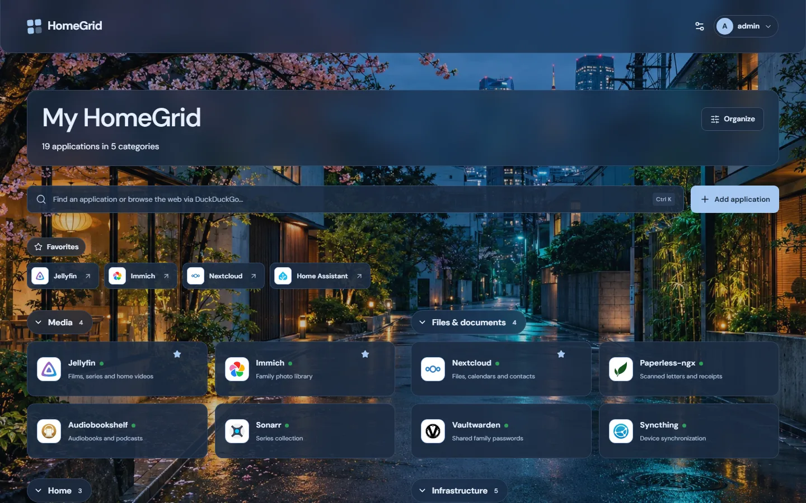
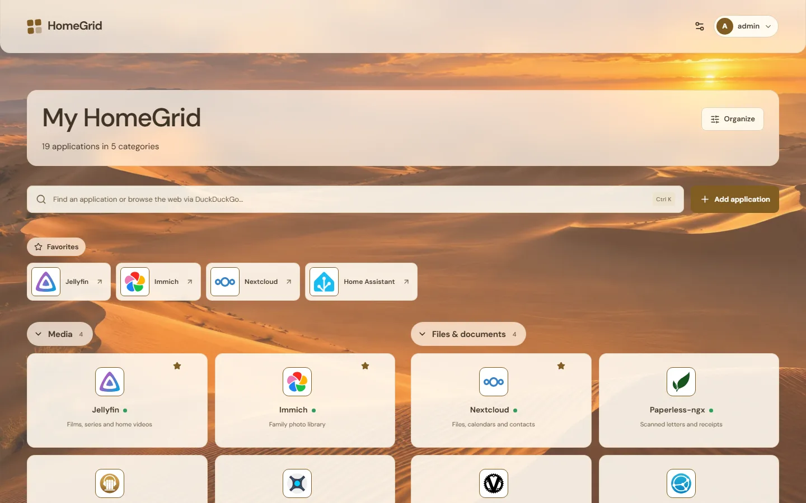
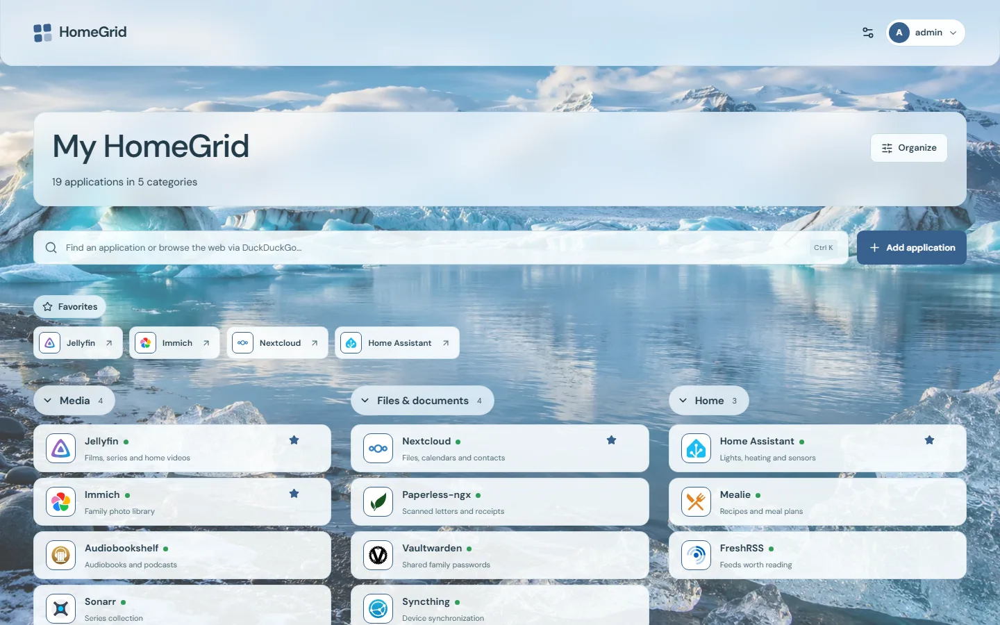
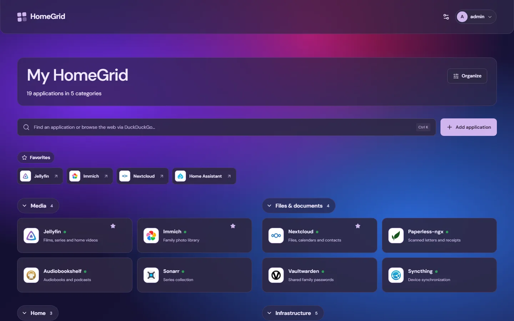
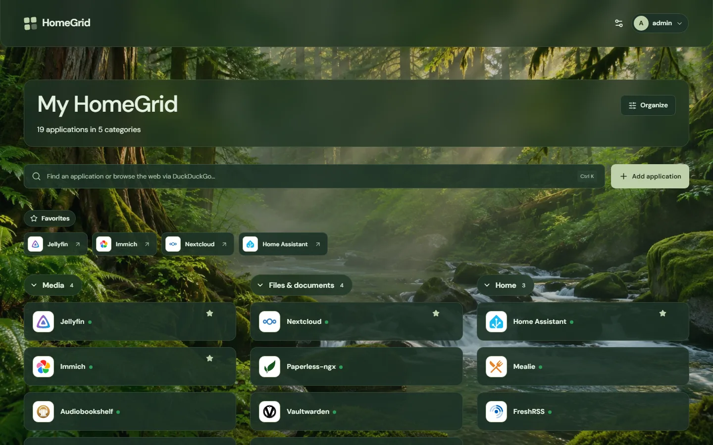
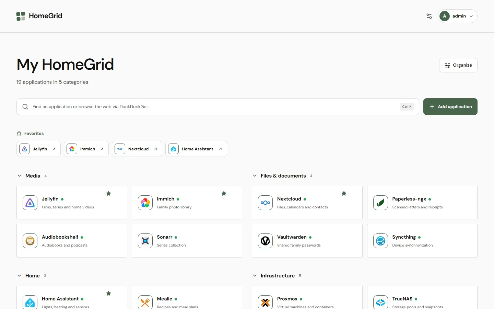
Organize in place
Everyday use stays calm. When you want to rearrange, turn on Organize and work directly on the dashboard.
Move cards and categories with drag-and-drop, keyboard sorting or explicit controls, including into empty or collapsed groups.
An optional dot next to each name shows whether the service answers. Off by default, at most one request per address and minute, no history.
Deletions, ordering and appearance changes can be undone for 30 minutes, even after a restart. Conflicting undos are refused.
Add HomeGrid to your phone's home screen or install it on the desktop. It opens in its own window, and you stay signed in while you use it.
Review icons and backgrounds that nothing uses anymore and delete them after confirming. Recent uploads are kept.
Choose your atmosphere
Start from a preset, then adjust each layer on its own: light, dark or system mode, surface palette, accent color and background. Appearance and layout share a live preview; nothing changes until you save.
Or use your own background image. Choose cards, tiles or a list, the dashboard width, columns, density and corners.
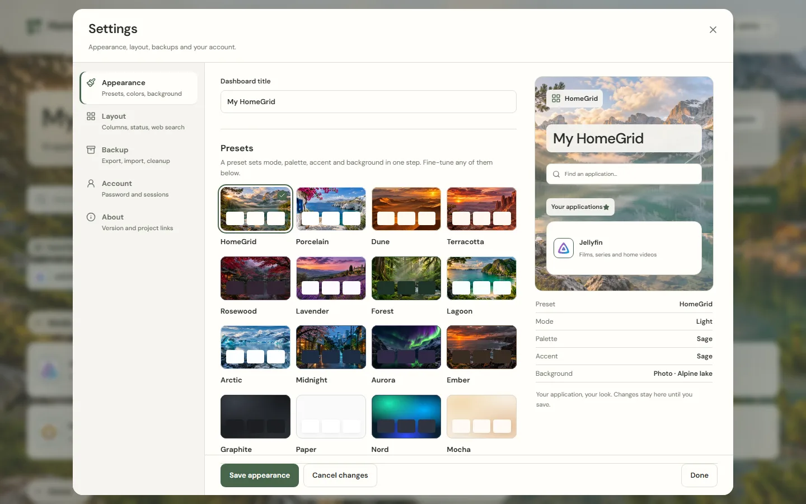
Small by design
HomeGrid is one Go executable with an embedded frontend and SQLite storage. It runs on your hardware and needs no outside service.
Runs as a non-root user with a read-only root filesystem and dropped capabilities. No Docker socket required.
No analytics and no hosted account. Bundled icons and backgrounds work offline. The backend only asks a service for its icon when you add one HomeGrid does not know yet, and checks whether services answer only if you turn that on.
One local administrator with argon2id password hashing, strict same-site session cookies, CSRF and origin checks, rate limiting and a restrictive Content Security Policy.
Quick start
http://<docker-host-ip>:8095 and create your administrator account.There are no default credentials. Compose publishes on all host interfaces, so complete setup from a trusted network. The image supports AMD64 and ARM64, including a Raspberry Pi with a 64-bit operating system. Then add services from 343 templates or import your Homepage, Homer or Dashy configuration.
curl -fsSLo docker-compose.yml https://github.com/bifrost0x/homegrid/releases/download/v0.1.0/docker-compose-0.1.0.ymldocker compose up -d --waitFree and open source under the Apache License 2.0, made with love for the homelab community.
Support HomeGrid
If HomeGrid makes your homelab a little nicer, a donation helps keep it maintained and free for everyone.
Monthly or one-time support.
A one-time thank you.
Ongoing membership.
Bug reports and ideas are just as welcome: open an issue.